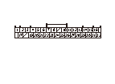

DTC 45
DTC 45:
パルサ コードの短絡
モータまたはセンサとリフタ コントロール ユニット間（SVCCライン）の短絡点検
1-1
リフタ コントロール ユニット カプラB（32P）の接続を外す
1-2
リフタ コントロール ユニット カプラB（32P）のNo.21端子とボディ アース間の導通を点検する
◆ 導通があるか
YES
-
ステップ
2
へ進む
NO
-
ステップ
7
へ進む

回転モータの短絡点検（SVCCライン）
2-1
回転モータ5Pカプラの接続を外す
2-2
リフタ コントロール ユニット カプラB（32P）のNo.21端子とボディ アース間の導通を点検する
◆ 導通があるか
YES
-
ステップ
3
へ進む
NO
-
回転モータを交換する
リクライニング モータの短絡点検（SVCCライン）
3-1
リクライニング モータ5Pカプラの接続を外す
3-2
リフタ コントロール ユニット カプラB（32P）のNo.21端子とボディ アース間の導通を点検する
◆ 導通があるか
YES
-
ステップ
4
へ進む
NO
-
リクライニング モータを交換する
前後スライド センサの短絡点検（SVCCライン）
4-1
前後スライド センサ3Pカプラの接続を外す
4-2
リフタ コントロール ユニット カプラB（32P）のNo.21端子とボディ アース間の導通を点検する
◆ 導通があるか
YES
-
ステップ
5
へ進む
NO
-
前後スライド モータを交換する
外スライド センサの短絡点検（SVCCライン）
5-1
外スライド センサ3Pカプラの接続を外す
5-2
リフタ コントロール ユニット カプラB（32P）のNo.21端子とボディ アース間の導通を点検する
◆ 導通があるか
YES
-
ステップ
6
へ進む
NO
-
外スライド モータを交換する
昇降スライド センサの短絡点検（SVCCライン）
6-1
昇降スライド センサ3Pカプラの接続を外す
6-2
リフタ コントロール ユニット カプラB（32P）のNo.21端子とボディ アース間の導通を点検する
◆ 導通があるか
YES
-
リフタ コントロール ユニットとモータ センサ間のコードの短絡
NO
-
昇降スライド モータを交換する
再現テスト
7-1
リフタ コントロール ユニット カプラB（32P）を接続する
7-2
リフタ コントロール ユニットの初期位置学習を行う
7-3
リフト アップ シートを格納状態から振出まで作動させる
7-4
自己診断モードでDTCを確認する
◆ DTC 45を吹鳴するか
YES
-
リフタ コントロール ユニットを交換する
NO
-
一過性故障、現在システムは正常